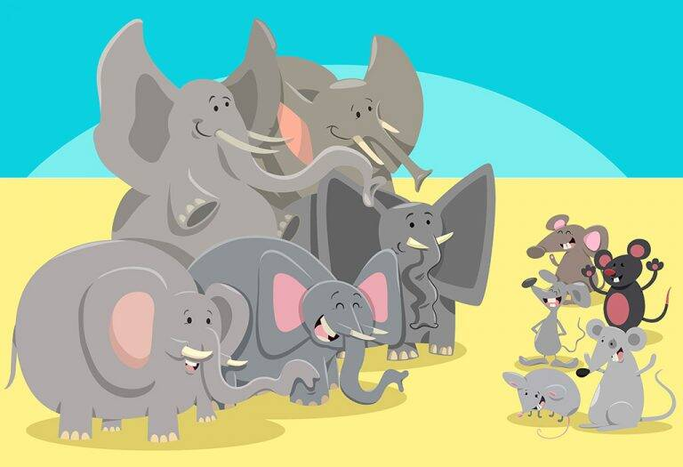

The Elephants and the Mice 
3. The Elephant and the Crab There was a village that was abandoned by its people after it shattered, post an earthquake. However, the mice living in the village decided to stay and make it their home. On the outskirts of this village, there was a lake, where a herd of elephants visited regularly to bathe and drink water. Since the village was on the way to this lake, the elephants trampled the mice while walking there. So, the king of mice decided to meet the elephants. He told them, ” O elephants, as you travel through the village, many mice are trampled. We will be very grateful if you could please consider changing your route. We will remember and return the favour when you are in need.”The elephant king laughed, “We are giant elephants. What favour can you mice return? Nevertheless, we honour your request and change our route.”After a few days, the elephants got trapped and entangled in nets that were set up by hunters. They struggled hard to escape, but in vain. The elephant king remembered the promise made by the king of mice.S o, he sent a fellow elephant who got lucky and was not trapped, to ask the mice king to come and help them.Soon, all the mice came and started nibbling the nets, and freed the elephants. The king of the elephants couldn’t thank the mice enough!
Moral of the Story: A friend in need is a friend indeed. Always be kind to people, and grateful for their help.